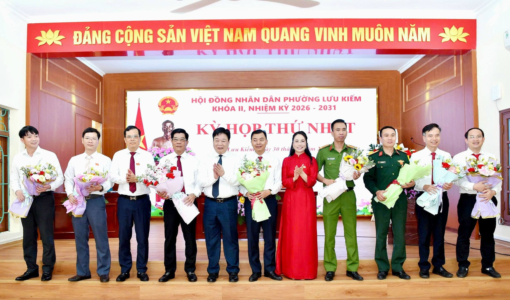
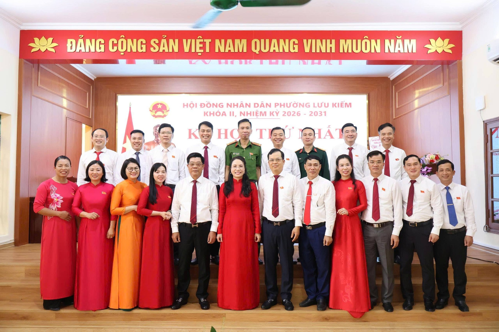

Sáng ngày 30/03/2026 tại trụ sở Đảng ủy - Mặt trận tổ quốc Việt Nam phường Lưu Kiếm. Hội đồng nhân dân phường Lưu Kiếm khóa II, nhiệm kỳ 2026 - 2031 đã tổ chức kỳ họp thứ nhất. Tại kỳ họp đã bầu một số chức danh của Hội đồng nhân dân và Ủy ban nhân dân phường, gồm:
1. Bà Đào Thị Thúy Hằng, Phó bí thư thường trực Đảng ủy phường được bầu làm Chủ tịch Hội đồng nhân dân phường khóa II 2. Ông Lương Anh Toàn, Đảng ủy viên được bầu tái cử chức danh Phó chủ tịch Hội đồng nhân dân phường khóa II

3. Ông Nguyễn Huy Hoàng, Phó bí thư Đảng ủy phường được bầu tái cử chức danh Chủ tịch Ủy ban nhân dân phường khóa II 4. Ông Lương Thủy Lâm, Ủy viên Ban thường vụ Đảng ủy được bầu tái cử chức danh Phó chủ tịch Ủy ban nhân dân phường khóa II 5. Ông Hoàng Anh Tuấn, Đảng ủy viên được bầu tái cử chức danh Phó chủ tịch Ủy ban nhân dân phường khóa II

6. Ông Bùi Mạnh Hưng, Ủy viên Ban thường vụ Đảng ủy, Trưởng Ban xây dựng Đảng được bầu tái cử chức danh Trưởng ban Ban kinh tế - ngân sách Hội đồng nhân dân phường khóa II 7. Ông Vũ Văn Cảnh, Ủy viên Ban thường vụ Đảng ủy, Chủ nhiệm UBKT Đảng ủy phường được bầu tái cử chức danh Trưởng ban Ban văn hóa - xã hội Hội đồng nhân dân phường khóa II 8. Hội đồng nhân dân phường cũng phê chuẩn danh sách các ủy viên Ủy bân nhân dân phường khóa II, gồm: Ông Đào Văn Thuận, Trưởng công an phường; ông Phan Hữu Chi, Chỉ huy trưởng Ban chi huy quân sự phường; ông Đào Văn Nam, Trưởng phòng Kinh tế - Hạ tầng và Đô thị phường; ông Lê Văn Thỉnh, Chánh văn phòng HĐND - UBND phường; ông Nguyễn Minh Kế, Trưởng phòng Văn hóa - xã hội phường.